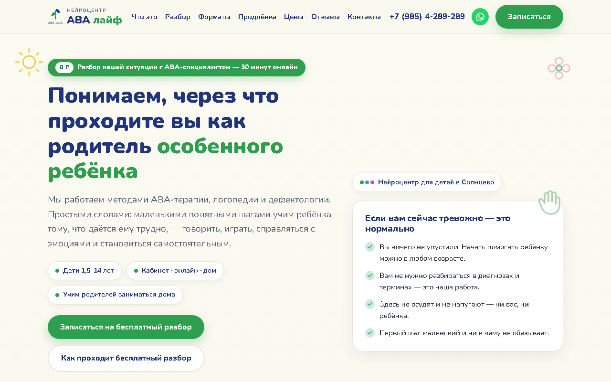
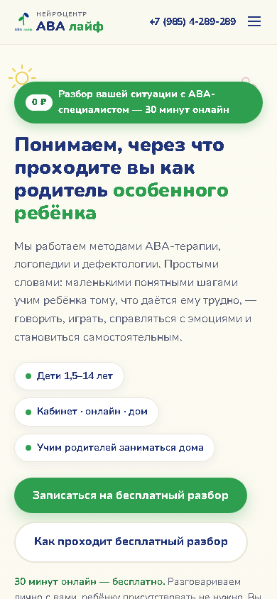
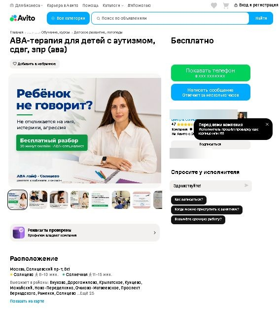
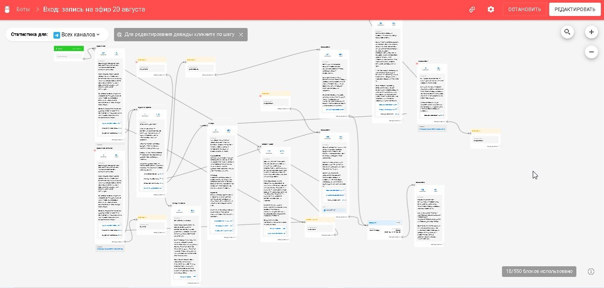

Сайт нейроцентра
Сайт не открывался у клиентов с Android
- Причина
- Сайт стоял на Cloudflare, а российские провайдеры его замедляют.
- Решение
- Перенесла на российский хостинг, переключила DNS, выпустила сертификат.
// вайбкодер · сайты для бизнеса с ИИ
Собираю сайты с помощью ИИ и довожу их до конца: форма заявок, домен, SSL, аналитика и SEO. Нахожу и чиню баги сама, по логам.
Реальная история, не пример
Центр только открылся: его никто не знал, отзывов не было. Сайт читают встревоженные родители особенных детей, поэтому нужен спокойный тон и мягкий первый шаг. А Яндекс строго проверяет медицинскую тему и не пропускает многие слова.


fetch, ответ сервера в JSON. Обработчик send.php на сервере в РФ: защита от спама (скрытое поле, не больше одной заявки в 20 секунд с одного адреса, проверка источника запроса), лог заявок вне корня сайта. В письме видно, с какой страницы пришла заявка.sitemap.xml, robots.txt, title и description, подтверждение в Яндекс Вебмастере, карта с карточкой организации на странице.выручка центра за сентябрь по всем каналам: Яндекс Директ, Яндекс Карты и Авито (данные на 29 сентября). За август, первый месяц работы, было 138 000 ₽.
Сайт сам по себе заявок не приносит, поэтому трафик на него я тоже вела сама.

ИИ быстро пишет код, но проверять его приходится человеку. Вот что ломалось на живых проектах и как я это нашла.
Сайт нейроцентра
Сайт нейроцентра
SERVFAIL looking up CAAСайт нейроцентра
Сайт нейроцентра
send.php.Сайт нейроцентра
Сайт нейроцентра
Онлайн-школа Виталия Новикова
target="_blank".Для онлайн-школы бизнес-тренера Виталия Новикова, июль — сентябрь 2026.
Интерактивная страница
Тест для владельцев бизнеса: отвечаешь на вопросы и сразу видишь результат. Показывали зрителям во время вебинара, ответы сохраняются в браузере.
HTML · CSS · JavaScript · localStorage · Git · GitHub Pages
Открыть страницу →Интерактивная страница
Раньше был файлом на скачивание, и у всех ломались переходы по ссылкам. Перенесла на GitHub Pages и встроила в урок курса.
HTML · JavaScript · Git · GitHub Pages · iframe
Открыть страницу →Автоматизация

Бот приглашает на эфиры, напоминает и продаёт. 350 подписчиков, в 20 раз больше переходов из Instagram в школу.
BotHelp · диплинки · UTM · Яндекс Метрика
ИИ пишет код, а я отвечаю за то, чтобы получилось то, что нужно бизнесу, и чтобы это работало.
Выясняю, какое целевое действие нужно бизнесу, кто клиент и откуда он придёт.
Раскладываю страницу на блоки: первый экран, призыв к действию, доверие, возражения, форма.
Ставлю ИИ задачу по одному блоку: контекст, ограничения, как проверить результат.
Работаю в Claude Code: он видит все файлы проекта и сам вносит правки.
Смотрю на телефоне и компьютере, отправляю тестовую заявку, читаю логи и ответы сервера.
Итерирую, пока не будет работать и хорошо выглядеть. Решения записываю, чтобы не наступать на те же грабли.
Память проекта. У каждого проекта свои правила и заметки для ИИ: как устроен сайт, как выкладывать, что уже пробовали.
Свои инструменты. Настраиваю ИИ-помощников под задачи: отдельные проверяют код и дизайн, отдельные ищут информацию.
Проверка снаружи. После выкладки проверяю живую страницу: ответ сервера, содержимое, мобильную версию.
Git. Страницы на GitHub Pages выкладываю через репозиторий: коммит, и через минуту обновление в сети.
Что делаю сама, что делаю вместе с ИИ и что изучаю прямо сейчас.
Меня зовут Вероника. У меня есть опыт бухгалтера, продажника, селлера на маркетплейсах, аккаунт-менеджера и менеджера проектов в диджитал-агентстве. Поэтому я понимаю бизнес не только как маркетолог, но и изнутри: как считаются деньги, как продают и зачем бизнесу сайт.
Теперь я занимаюсь вайбкодингом: вместе с нейросетями делаю сайты и страницы для реальных клиентов — детского центра в Москве и онлайн-школы Виталия Новикова. И каждый раз поражаюсь, что мои возможности теперь практически безграничны.
Живу в Уфе, работаю удалённо. Быстро разбираюсь в незнакомом сервисе и не бросаю задачу, пока она не заработает.